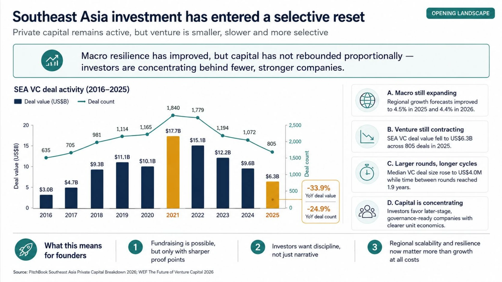
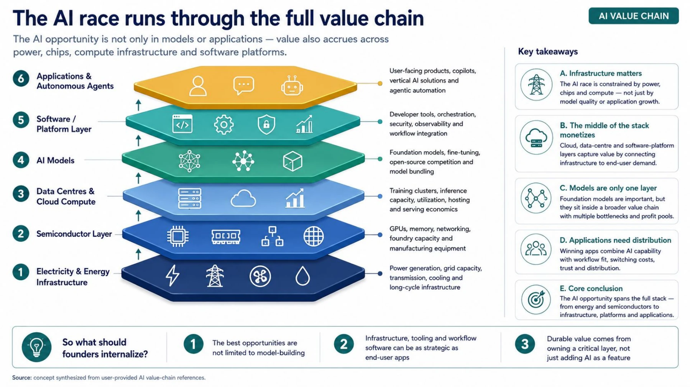
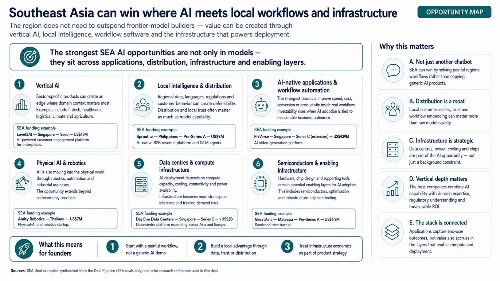
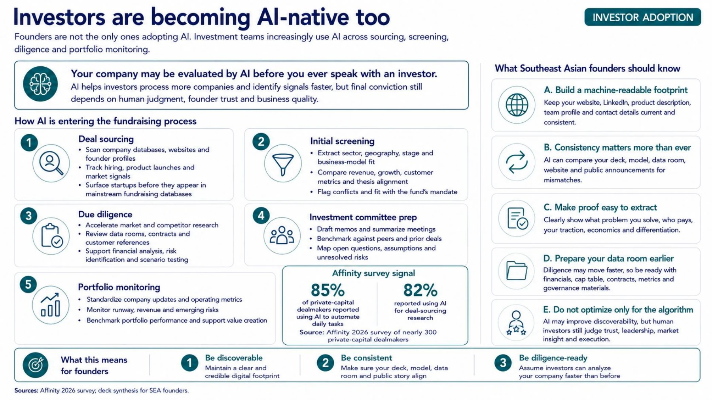

A boom and a funding winter at the same time
Artificial intelligence has created one of the most concentrated investment cycles in recent memory. But for Southeast Asia, the central question is not whether the region can produce the next OpenAI. It is where, across the AI value chain, Southeast Asian companies can build durable advantages of their own.
The global numbers are striking. The World Economic Forum reported that AI accounted for more than half of global venture deal value in 2025. In the first quarter of 2026, four companies collectively raised US$188 billion, representing 65 per cent of all global venture investment during the quarter.12
For founders in Southeast Asia, the capital environment is distinctly different. Although startup funding reached US$5.37 billion across 461 equity deals in 2025, according to DealStreetAsia and Kickstart Ventures, a few massive transactions disproportionately drove this total. Beneath the surface, the year ended with one of the region's lowest annual deal counts in more than six years.3
These two realities are not contradictory. They describe the same market: more capital is available for technology, but investors are becoming much more selective about where it goes.
That distinction matters for founders. An AI label may help a company enter the conversation, but it does not remove the need to prove demand, retention, unit economics, governance and a credible pathway to scale. In a selective market, “we use AI” is not an investment thesis. The business outcome is the investment thesis.

The AI economy is much larger than the model layer
The second misconception surrounding the AI boom is that most of the economic opportunity belongs to model developers and application companies.
AI is better understood as a stack.
At the bottom is electricity and energy infrastructure. Above it sit semiconductors, memory, networking and manufacturing equipment. Those components feed data centres and cloud infrastructure, which provide the compute used to train and run models. Models then sit beneath software platforms, developer tools and orchestration layers. Applications and autonomous agents sit at the top.
This matters because the economics differ radically by layer. A recent overview by Appreciate describes AI as an industrial system dependent on power generation, specialised chips, data-centre capacity, foundational models and enterprise software. Lower layers are capital intensive and constrained by physical capacity, while upper layers can scale faster but often face lower barriers to entry and more intense competition. IoT Analytics similarly argues that cheaper and increasingly capable models can shift value toward application providers and end users, while putting pressure on proprietary model economics.67
The energy numbers make the physical nature of AI impossible to ignore. The International Energy Agency estimates that global data-centre electricity consumption will roughly double from 485 terawatt-hours in 2025 to about 950 TWh in 2030. Electricity use by AI-focused data centres is expected to triple over the same period.4 In Southeast Asia specifically, data-centre electricity demand is expected to more than double by 2030, helped by the growth of Singapore and southern Malaysia as regional hubs.5
The implication is straightforward: the AI race is not only a software race. It is also a race for chips, compute, cooling, land, connectivity, power and grid capacity.
For Southeast Asia, that considerably widens the opportunity set.

Where Southeast Asia can actually win
Southeast Asia is unlikely to win by attempting to reproduce Silicon Valley's frontier-model ecosystem country by country. The capital requirements are enormous, global research talent is concentrated, compute access matters, and the leading laboratories already operate at extraordinary scale.
But that does not make the region peripheral. It changes where comparative advantage is likely to emerge.
The first opportunity is vertical and workflow-specific AI
Southeast Asian economies contain fragmented industries, multilingual populations, complex regulation and large numbers of businesses that still depend on manual processes. Those characteristics create friction, but they also create opportunities for software that understands local workflows.
Singapore-based Level3AI is one example. The company announced a US$13 million seed round led by Lightspeed, with participation from BEENEXT, 500 Global, Sovereign's Capital and Goodwater Capital.8 It builds AI agents for enterprise customer engagement across voice, email and chat. The important feature is not simply that the company uses large language models. Its product is designed around a specific enterprise workflow and measurable customer-engagement outcomes.
The second opportunity is physical AI
Thailand-based Amity Robotics closed a US$7 million seed round in July 2026 combining equity and debt financing. East Ventures led the equity portion, while AlteriQ Global led the debt portion.9 The company is building physical AI and robotics systems rather than another purely digital interface.
This direction is particularly relevant for Southeast Asia because many of the region's largest economic sectors - manufacturing, logistics, agriculture, hospitality, retail and energy - exist in the physical economy. The potential value of AI is therefore not limited to knowledge work. It also lies in automating movement, inspection, service delivery and industrial processes.
The third opportunity is semiconductors and enabling infrastructure
Malaysia-based GreatAsic raised US$6.9 million in a pre-Series A round led by Vertex Ventures Southeast Asia & India, with Ehsan Kapital and Gobi Partners participating. GreatAsic designs custom ASICs and AI system-on-chip platforms for data-centre, edge-AI and automotive markets. Vertex framed the investment within Malaysia's ambition to move beyond semiconductor assembly and testing toward higher-value chip design.10
The fourth opportunity is data-centre infrastructure itself
Singapore-headquartered DayOne Data Centers completed a US$4.5 billion Series C financing in June 2026, led by existing investors Coatue and Hillhouse, with new participation including the Indonesia Investment Authority. DayOne said the capital would accelerate expansion across markets including Singapore, Malaysia, Indonesia and Thailand, as well as other locations in Asia-Pacific and Europe.11
A US$13 million enterprise-AI seed round and a US$4.5 billion data-centre financing may look like entirely different transactions. They are actually connected. One builds intelligence into a workflow. The other builds the physical capacity required to run that intelligence at scale.
This is the central point: Southeast Asia's AI opportunity is not confined to applications. It extends from local workflows and software to robotics, chips, data centres and energy infrastructure.

Local complexity can become a moat
There is another advantage Southeast Asian founders should not underestimate: complexity.
The region is not one homogeneous market. Languages, regulations, financial systems, customer behaviour and business practices vary widely across countries and often within them. A global model may be technically powerful while still lacking the context needed to operate effectively inside a local workflow.
For a generic global software company, that fragmentation can be a cost. For the right local company, it can become defensibility.
The strongest regional AI businesses may therefore combine globally available models with assets that are harder to import: proprietary local data, domain expertise, distribution, regulatory knowledge, customer trust and deep integration into workflows.
A foundation model can be switched. A system embedded in a company's approvals, historical data, customer service, reporting, employee routines and downstream actions is much harder to remove.
The moat is rarely the API itself. It is the system built around it.
A useful test is simple: does every additional customer make the product more useful, the data advantage stronger, the workflow integration deeper or the distribution advantage harder to replicate? If the answer is no, the company may have an AI feature rather than a compounding business advantage.
What investors are really evaluating
For founders fundraising in this environment, the investor scorecard is changing, but perhaps less radically than many assume.
Investors still begin with a basic question: is this a good business?
AI introduces additional questions. Does the technology materially improve the economics of solving the problem? Is AI actually required? Does usage create proprietary data or a feedback loop? What happens if underlying model costs fall sharply? Can another company reproduce the product using the same foundation model? What does inference cost at scale? Who owns the data? How are security and model errors handled?
But these questions sit alongside traditional ones.
Who is paying? Why are they paying? Are they staying? Is usage expanding? How expensive are customers to acquire? Can gross margins improve as the company scales? Can the team explain its numbers consistently? Is the cap table clean? Is the company prepared for due diligence?
This is where many AI fundraising narratives become vulnerable.
A compelling demo can win a meeting. It does not necessarily survive diligence.
The companies that create stronger investor conviction usually connect five things: an urgent problem, evidence of customer pull, an AI-enabled improvement that is meaningful rather than cosmetic, a defensibility loop that strengthens with use, and economics that remain credible after compute and operating costs are included.

Fundraising should finance proof, not hype
The AI boom also creates a temptation to maximise valuation or raise as much capital as possible while attention remains high.
A better question is: what uncertainty will this round eliminate?
For an enterprise-software company, the next round may need to prove that pilot customers convert into recurring contracts. For a regional platform, it may need to demonstrate that the product can expand from one Southeast Asian market into another. For a robotics company, it may need to prove deployment reliability and unit economics. For an infrastructure company, it may be securing power, sites or long-term customer commitments. For a semiconductor company, it may be reaching a technical or commercial milestone.
The amount being raised should follow from that milestone.
This creates a stronger fundraising narrative because investors can understand what their capital is buying and what risk should be reduced before the next financing event.
The same logic applies to investor targeting. A seed-stage enterprise software company needs a different capital partner from a data-centre developer raising billions for physical infrastructure. A robotics company may require investors comfortable with hardware, inventory and longer development cycles. A regulated fintech or healthcare AI business may benefit from investors with sector expertise and regulatory networks.
Fundraising is therefore not simply a search for money. It is a search for capital that understands the risk being financed.
Southeast Asia should define its own AI race
There is a tendency during emerging technology cycles to judge Southeast Asia by whether it can reproduce what has already been built elsewhere.
Where is Southeast Asia's OpenAI? Where is its NVIDIA? Where is its hyperscaler?
Those questions can be useful, but they can also obscure where regional value is actually being created.
The more useful questions may be different.
Can Southeast Asian companies automate workflows that remain inefficient because existing global products do not understand them? Can local founders build AI businesses around manufacturing, logistics, financial services, healthcare, agriculture, climate and energy? Can Malaysia capture more value in chip design? Can Singapore continue to act as a capital, research and regional-headquarters hub while more physical infrastructure develops across neighbouring markets? Can Indonesia, Malaysia, Thailand and Vietnam turn growing digital demand into competitive data-centre and power ecosystems?
These opportunities are less dramatic than announcing another frontier model. But they may be more relevant to the region's actual economic structure.
Southeast Asia does not need to win every layer of the AI stack. It needs to identify the layers where its capabilities, resources, local knowledge and market structure create an advantage, and build companies strong enough to own those positions.
For founders, that leads to a simple conclusion: do not build AI because capital is chasing AI. Build a business whose economics become materially better because AI exists.
In the current market, attention may be abundant.
Investor conviction is not.
And earning that conviction may ultimately be the most important competitive advantage of all.
Sources
- 1World Economic Forum, “Venture capital is vital. But can it fund the next wave of innovation?”, 11 May 2026.
- 2World Economic Forum, The Future of Venture Capital: Unlocking Liquidity and Growth, 11 May 2026.
- 3DealStreetAsia, Southeast Asia Startup Funding Report: Full Year 2025, 29 January 2026.
- 4International Energy Agency, Key Questions on Energy and AI - Executive Summary.
- 5International Energy Agency, Energy and AI - Energy demand from AI.
- 6Appreciate, “Understanding the AI Value Chain”, updated 16 June 2026.
- 7IoT Analytics, “DeepSeek R1's implications: Winners and losers in the generative AI value chain”, 5 February 2025.
- 8Gunderson Dettmer, “Lightspeed India Partners Leads Level3AI's US$13 Million Seed Financing”, 22 January 2026.
- 9East Ventures, “Thai startup Amity Robotics closes US$7.0 million Seed round”, 2 July 2026.
- 10Vertex Ventures Southeast Asia & India, “GreatAsic Technology Raises US$6.9 Million”, 10 June 2026.
- 11DayOne Data Centers, “Final Closing of its Series C Equity Financing at US$4.5 Billion”, 5 June 2026.
- 12PitchBook, 2026 Southeast Asia Private Capital Breakdown, 11 March 2026.
- 13True Global Ventures and Accel, “Sprouts.ai Raises US$9 Million Pre-Series A”, 15 May 2026.
- 14PixVerse, “Series C Extension Bringing Total to US$439 Million”, 14 July 2026.
- 15DayOne Data Centers, “Over US$2.0 Billion Series C Financing”, 5 January 2026.
- 16Affinity, Private Capital Predictions for 2026, survey of nearly 300 private-capital professionals.